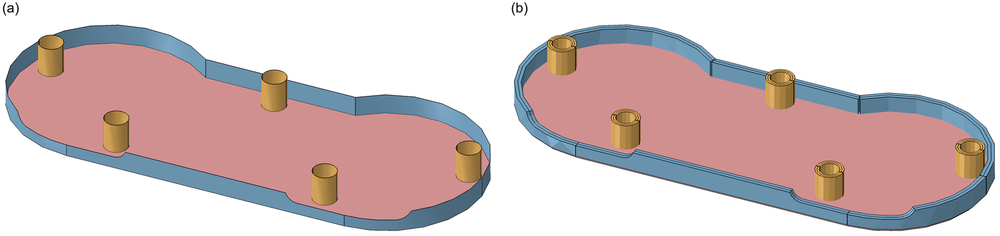
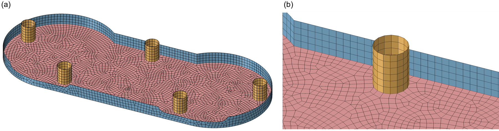
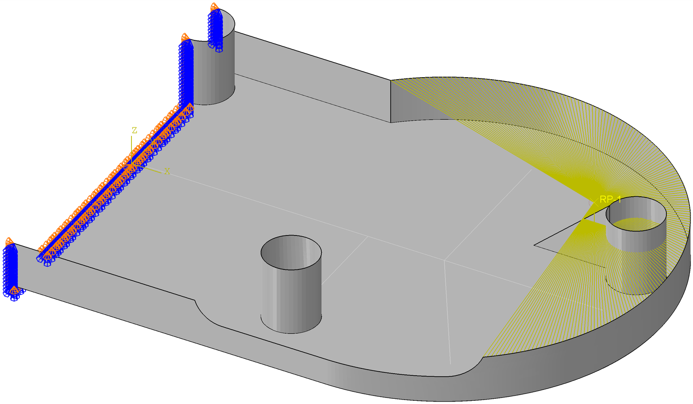
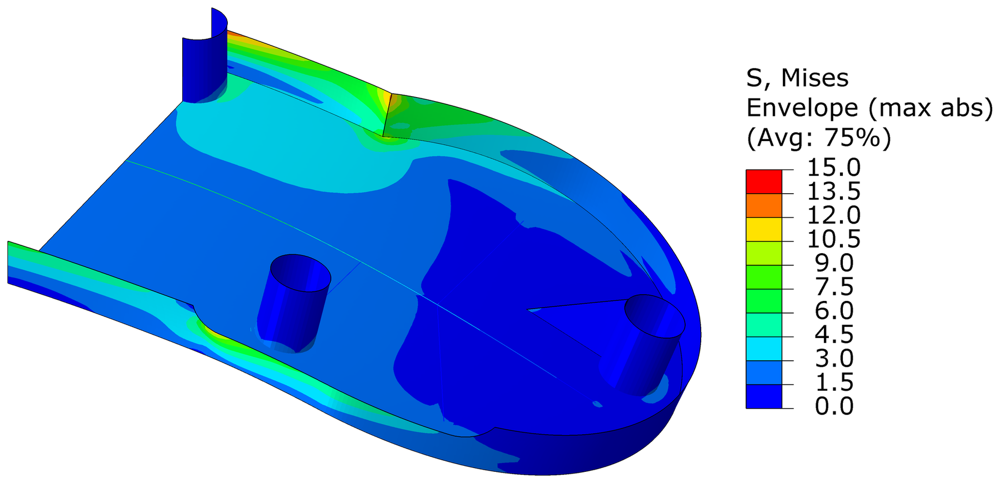
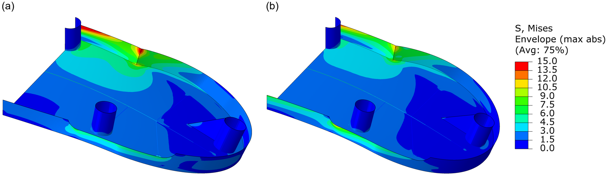
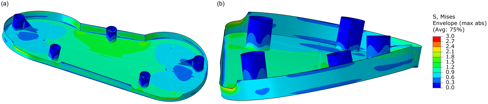

Lower shell of a game controller: shells, beams and couplings
We model the lower shell of a game controller and check what happens when a player squeezes the grips. Like the Steam Controller in Figure 1, the case is a thin plastic shell stiffened by bosses and ribs, so we mesh it with shells for the walls and beams for the ribs.
| Material | \(E\) (MPa) | \(\nu\) | \(\sigma_y\) (MPa) |
|---|---|---|---|
| ABS | 2200 | 0.38 | ≈ 40 |
The STEP file (shell_controller_lower.STEP) holds only surfaces. The part is symmetric about \(x = 0\), so we model half of it.

| Region | Section | Thickness (mm) | Offset |
|---|---|---|---|
| Floor | bottom_shell | 2.1 | Top surface |
| Outer walls | outer_walls | 1.9 | Top surface |
| Bosses | supports | 1.25 | Top surface |
The surfaces are the inside faces of the part and all normals point into the controller. With the Top surface offset the thickness then grows outwards. Check it with Render shell thickness.
The ribs (1 × 3 mm) are wires on the floor meshed with B31 beams. Use a TRAPEZOID profile with its origin on the bottom edge, so the rib stands on the floor, and check the orientation with Render beam profiles.
The shells are meshed with S4R at a 1.5 mm seed. Floor, walls and bosses share nodes, so no ties are needed.

The centre line is held and the grip is pushed down by 12 N at the snap-fit rim.


The peak is 13.0 MPa and the RP moves down 1.17 mm. The peak sits on a sharp kink, so compare cases at the same mesh rather than trusting the number.
RP off the rim centroid. With the RP 14.8 mm away from the centroid, the force also twists the grip and the peak rises to 17.6 MPa (Figure 6). Put the RP on the line of action of the load.
Nothing holds \(U_2\). The part can slide in \(y\) and Abaqus warns about zero pivots. Hold \(U_2\) at one node and always read the .msg file.

These are already set up in class_example_cases.cae.
| Case | Prescribed | Symmetry | Result | Peak Mises |
|---|---|---|---|---|
| A | 12 N down at the rim RP | XSYMM | RP −1.17 mm | 13.0 MPa |
| B | 1 mm down at the rim RP | XSYMM | 10.3 N | 11.2 MPa |
| C | Grip turned 1° about \(y\) | XSYMM | 0.13 N m | 4.3 MPa |
| D | Grip turned 1° about \(x\) | XASYMM | 0.08 N m | 2.6 MPa |
Twisting (D) is antisymmetric, so the half model needs XASYMM and must be mirrored antisymmetrically to show the full part. The Visualization mirror is always symmetric, so mirror_odb.py writes the copy.
